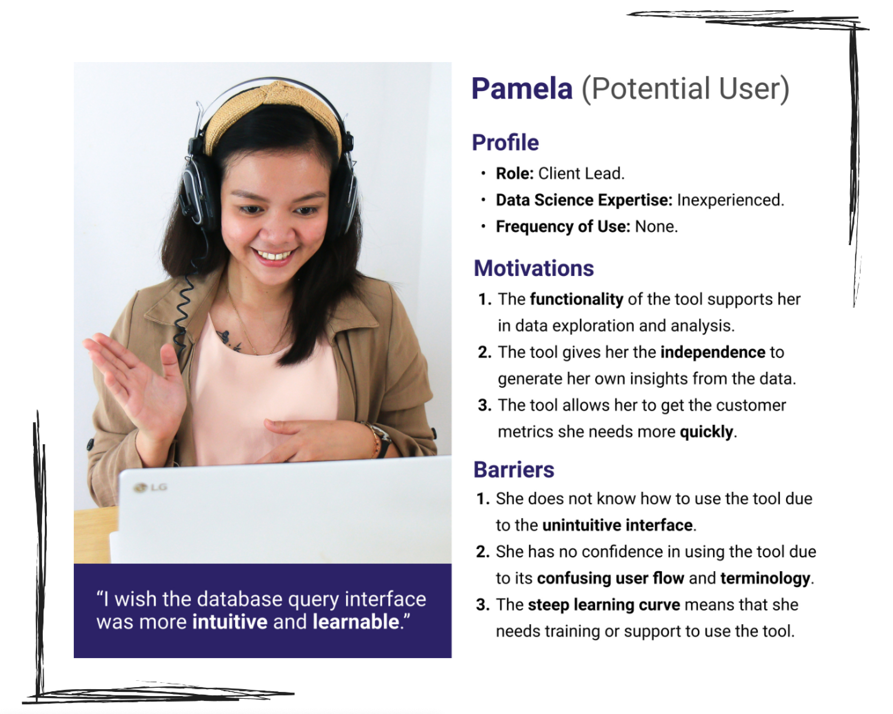
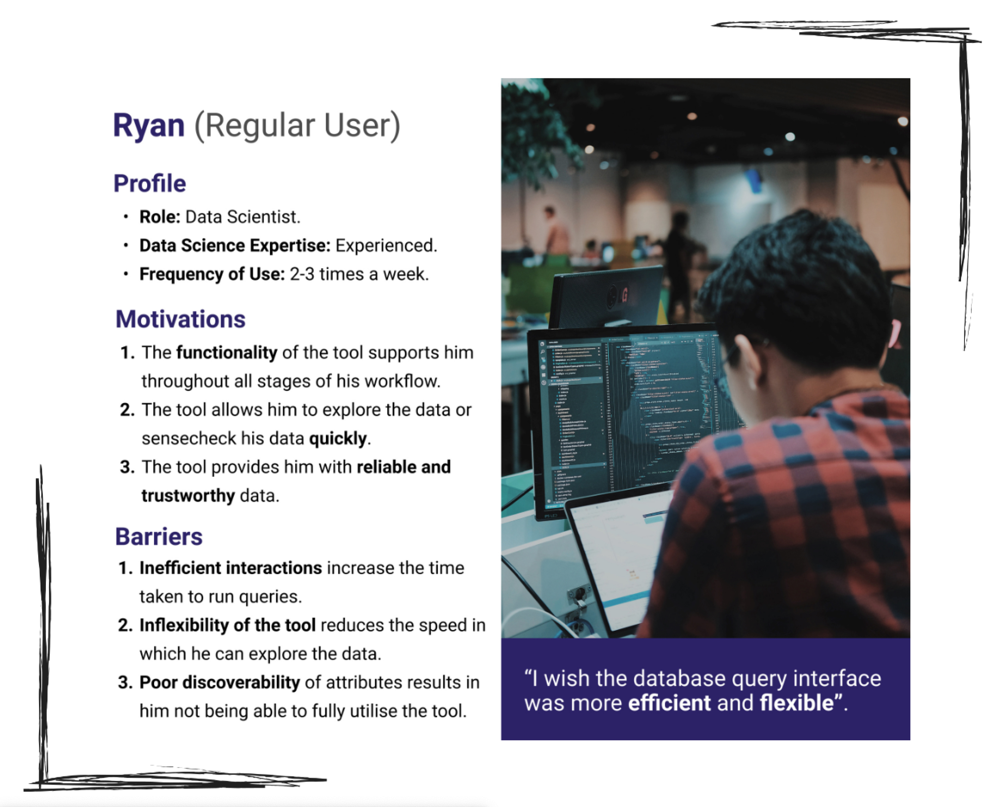
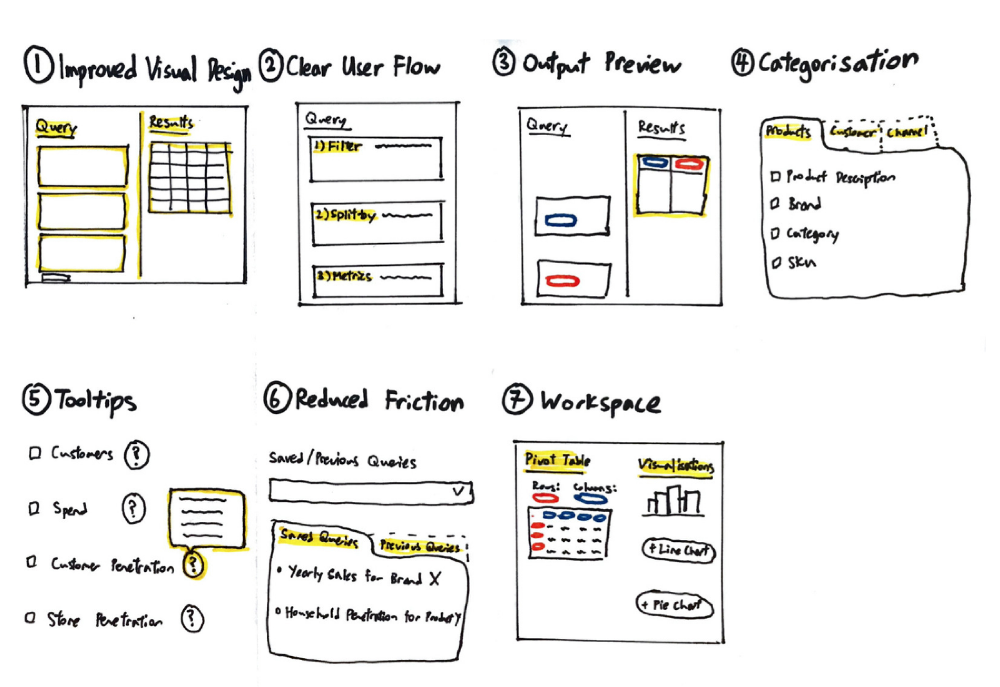
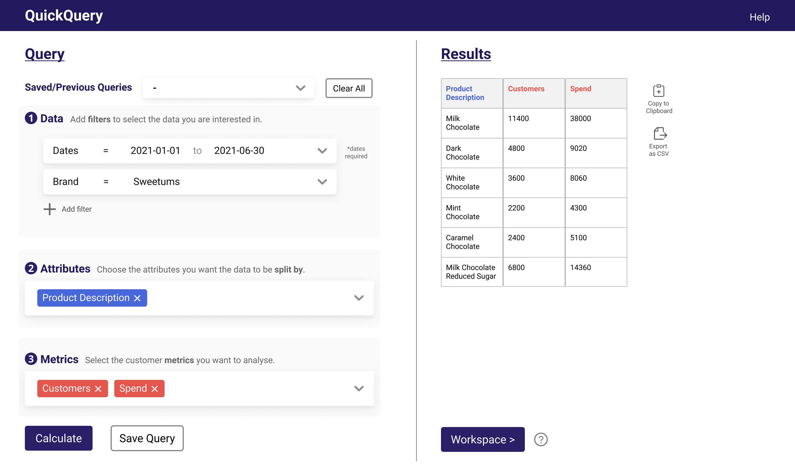
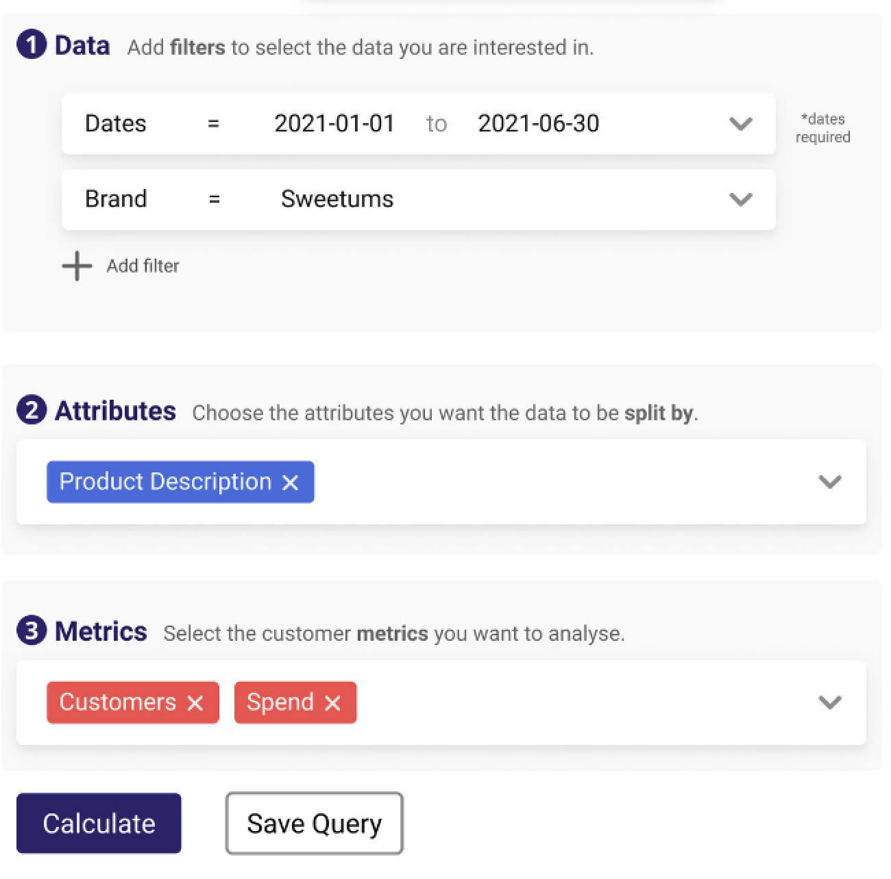
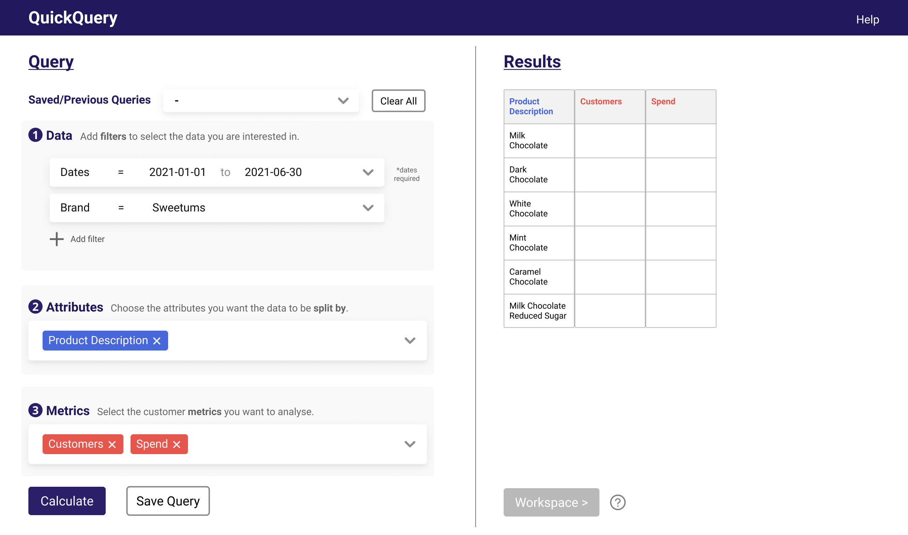
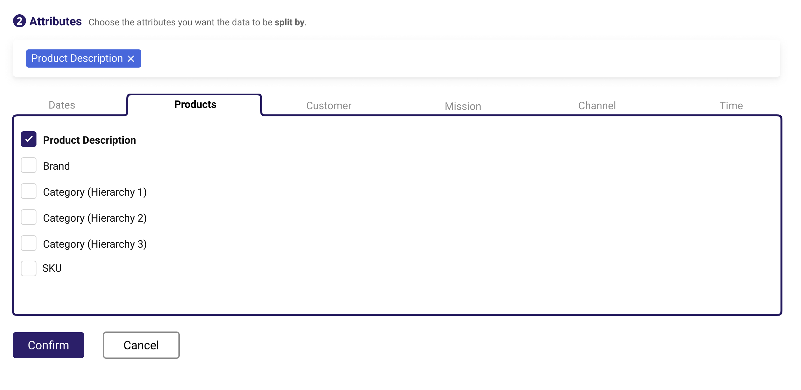
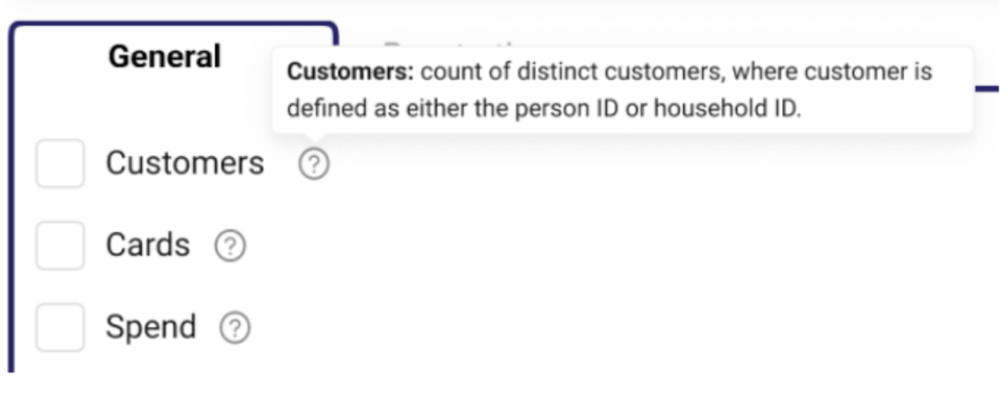
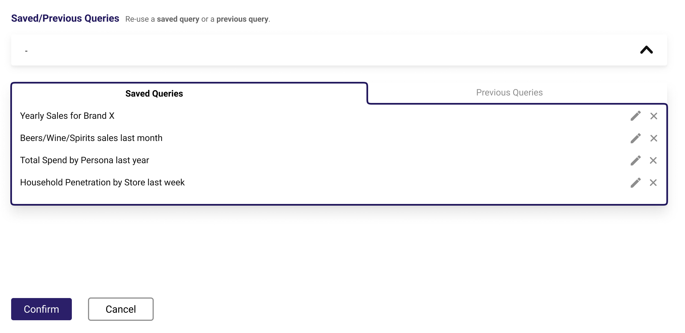
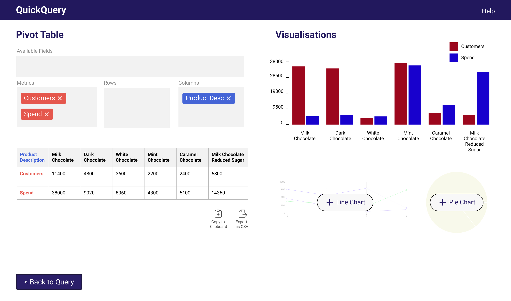

Dunnhumby
Designing an intuitive and user-friendly data analysis tool.
Role 👨🏻💻
UX Designer
Team 👥
Individual
Location 📍
London, UK
Duration 🕒
5 months
(May‑Sep '21)
Project 💻
Master's Project
Skills 🔧
User Research
UI Design
Background
Dunnhumby is a global data science company that works with retailers and brands in the fast‑moving consumer goods (FMCG) industry.
They use insights from customer data to help their clients boost sales, build customer loyalty and increase shopper satisfaction.
The Problem
Employees of Dunnhumby regularly use a data analysis tool to query data from the customer transaction databases of their grocery retailer clients.
However, in an initial survey, many users commented that the data analysis tool was unintuitive and difficult to use.
The Goal
Improve the learnability and usability of the data analysis tool.
My Role
As the sole UX Designer, I conducted user research, defined the requirements, came up with design ideas, created an interactive prototype, and evaluated the new design.
1. Empathise
Participants
To identify the use cases and pain points of the data analysis tool, I conducted user research with 5 non-users and 10 existing users.
Participants had different roles within Dunnhumby (e.g. Client Leads, Media Planners, Data Scientists, Team Managers) and varying levels of data science expertise.
User Interviews
In the first part of the session, I conducted a semi-structured interview to better understand the participants and their current practices when interacting with the data analysis tool.
In particular, participants were asked to describe their job role, their experience in working with customer data, and their goals and workflow when using the data analysis tool.
Usability Tests
In the second part of the session, a usability test was conducted to identify the challenges and pain points faced by participants when using the data analysis tool.
In particular, participants were tasked to think about something they might be interested in finding out from the customer transaction data, and to use the tool to accomplish that task.
Participants were reminded to think aloud throughout the usability test, and were probed with follow-up questions after they completed or gave up on the task.
2. Define
Personas
Based on findings from the user research, two personas were created to describe the potential users and the regular users of the data analysis tool.
The main user requirement for potential users is that the tool is intuitive and easy to learn.
The main user requirement for existing users is that the tool is efficient and flexible.
 Design Limitations
Through an inductive (bottom-up) thematic analysis, I identified seven design limitations of the data analysis tool:
- Poor Visual Design: The existing user interface did not apply any principles of visual hierarchy (e.g. size, colour, contrast, spacing) to guide the user toward their goal.
- Unintuitive User Flow: The existing user journey was not aligned with the mental models of the users, resulting in confusion and frustration.
- No Visibility of System Status: No feedback is provided while the user builds their query. Thus, if the user made any errors, they would not know where they made the mistake and only notice it late in the process when an error message is shown.
- Does not Support Browsing: There were many useful customer metrics and attributes that were not used due to poor discoverability. Additionally, users needed to remember attribute names if they wanted to search for specific attributes (e.g. products), requiring them to rely heavily on memory to achieve their goal.
- Unclear Terminology: Many terms were unclear or confusing, such as the meaning of complex metrics (e.g. "Household Penetration") and attributes (e.g. "Hierarchy 1").
- Inefficient Interactions: Unnecessary clicks were required to perform certain functions, and it was difficult for users to re-use queries that they have previously built before.
- Lack of Flexibility in Output: There was little manipulation that could be done to the output unless the user exported the file into a spreadsheet tool (e.g. Microsoft Excel).
Unfortunately, I cannot show screenshots of the interface because they might contain sensitive information.
3. Ideate
Ideation Process
I began ideation with a diverging process, generating a large quantity of ideas as sketches.
I then proceeded toward a converging process by refining, combining and removing initial ideas based on how effective they were in meeting user requirements.
At the end of the process, I came up with seven design ideas that tackle each of the limitations that were identified during the user research.
Design Ideas
- Clean Visual Design: The new interface applies principles of visual hierarchy to highlight different sections, and uses modern design elements to increase it's visual appeal. 
- Clear & Intuitive User Flow: The new interface follows a new user flow that aligns with the mental model of users. New users can follow a step-by-step guide to formulate their queries, whereas familiar users still have the flexibility of building their query in their preferred order (e.g. completing steps 2 and 3 before step 1). 
- Output Preview: Users are shown a preview of their output (on the right) as they are formulating their query (on the left), following the principle of "What You See Is What You Get" (WYSIWYG). This aims to communicate the visibility of system status and provide immediate feedback, supporting users in error recognition and recovery. 
- Categorisation of Attributes & Metrics: Attributes and metrics are grouped into categories to improve their discoverability ot users. 
- Tooltips: Expandable tooltips that contains definitions to complex terms and links to reference lists (e.g. product hierarchy) are added to improve users' understanding. 
- Saved Queries: Allow users to save queries and re-use previous queries to increase efficiency and reduce friction. 
- Workspace: Users can pivot tables to group, sort and aggregate their results in different ways, or add simple visualisations for their results. This aims to support users in rapid data exploration and insight generation. 
4. Prototype
I designed an interactive prototype in Figma to showcase the seven design ideas.
The prototype has limited functionality as it was designed to communicate a single user journey in a moderated usability test. You can use the arrow keys and hotspot hints to help you navigate the prototype. Or just watch the demo below!

In this scenario, the user is working for a candy brand called "Sweetums" and is querying the number of customers that bought each product and the amount spent on each product in the first six months of 2021.
5. Test
Method
To test the new design, I conducted usability tests with 2 non-users and 4 existing users who also participated in the previous round of user research. Participants were asked to think aloud as they performed a fictional user task using the interactive prototype. After they completed the task, they were asked to provide their feedback on the design ideas.
Findings
- 100% of participants liked the clean visual design (Idea 1) and output preview (Idea 3).
- 2 out of 3 participants liked the saved queries (Idea 6) and workspace (Idea 7) features.
- Half of the participants believed the interface was clearer due to the categorisation of attributes & metrics (Idea 4) and the tooltips (Idea 5).
- Although the new user flow (Idea 3) was initially confusing to some users, most users thought the new flow was more intuitive after getting more familiar with the design.
Results
Outcome
Overall, the qualitative feedback was overwhelmingly positive and many believed that the new user interface will make the data analysis tool more intuitive and user-friendly.
In addition, the product manager and product team were impressed with my contribution and are looking to implement many of the ideas in the near future.
"Jingxiu was a pleasure to collaborate with. Throughout the research phase of the project I was continually impressed by his curiosity and interpersonal skills. He led dozens of online user research interviews, putting participants at ease and was able to get a clear grasp of problems and challenges faced by them – actively listening and playing back his understanding. In the latter stages of the project, we got to see that he has the design chops as well, able to come up with innovative and effective solutions to design challenges."
Jon Geraghty, Head of Data Visualisation at Dunnhumby (Research Supervisor)
"It was a pleasure to work with Jingxiu, he was organised, worked independently and had a clear vision for the project. Feedback on his interactions with other employees was positive and he used his excellent communication skills to successfully conduct user interviews. Jingxiu was proactive during our planning sessions and put forward lots of good ideas."
Rosie Prior, Technical Manager at Dunnhumby (Research Supervisor)
Reflections
What went well 😄: I worked on my active listening skills throughout this project. During the user research, I constantly clarified what participants meant by repeating back what they said, and adapted the flow of the interview based on their answers. As such, I was able to build strong rapport with participants and extract many useful insights from the user research.
What could be improved 🤔: The evaluation of the new design lacked quantitative measures. This was because of the limited functionality of the prototype (i.e. only specific screens, no actual data), which meant that no fair quantitative comparisons (e.g. number of clicks, time taken) could be made between the new design and the original interface. For future projects with less resource and time constraints, I aim to extend beyond qualitative measures and incorporate more quantitative metrics during the user evaluation.